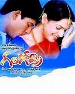
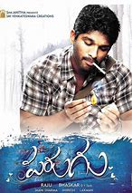
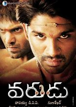
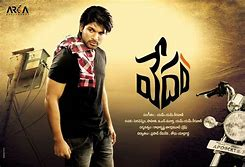
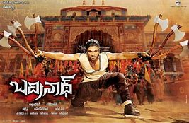
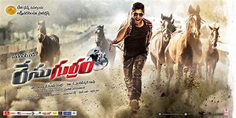
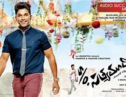
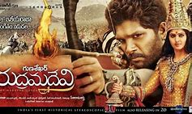
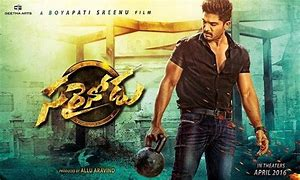
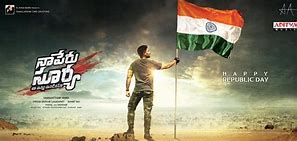

Allu Arjun is an Indian film actor who primarily works in Telugu cinema. After playing as a child artist in Vijetha and as a dancer in Daddy, Arjun made his adult debut in Gangotri. Arjun then appeared in Sukumar's debut film Arya.His role in Arya was his breakthrough, earning him his first Filmfare Best Telugu Actor Award nomination and he won a Special Jury award at the Nandi Awards ceremony, two CineMAA Awards for Best Actor and Best Actor Jury and the film was a critical and commercial success. He next starred in V. V. Vinayak's Bunny playing the role of Bunny, a college student. Critics praised his mannerisms and dancing.His next film was A. Karunakaran's musical love story Happy.He then starred in Puri Jagannadh's action film Desamuduru, in which he played the role of Bala Govindam, a fearless journalist who falls for a woman with a darker past. Arjun has won five Filmfare Awards South and two Nandi Awards.
| Title | Directors | Posters | Links |
|---|---|---|---|
| Gangotri | K Raghavendra Rao |  | Watch Now |
| Arya | Sukumar | Watch Now | |
| Bunny | V V Vinayak | Watch Now | |
| Happy | A Karunakaran | Watch Now | |
| Desamuduru | Puri Jagannadh | Watch Now | |
| Parugu | Bhaskar |  | Watch Now |
| Arya 2 | Sukumar | Watch Now | |
| Varudu | Gunasekhar |  | Watch Now |
| Vedam | Krish |  | Watch Now |
| Badrinath | V V Vinayak |  | Watch Now |
| Julai | Trivikram srinivas | Watch Now | |
| Iddarammayilatho | Puri Jagannadh | Watch Now | |
| Race Gurram | Surender Reddy |  | Watch Now |
| S/O Sathamurthy | Trivikram Srinivas |  | Watch Now |
| Rudhramadevi | Gunasekhar |  | Watch Now |
| Sarainodu | Boyapati Srinu |  | Watch Now |
| Duvvada Jagannadham(DJ) | Harish Shankar | Watch Now | |
| Naa Peru Surya Naa Illu India | V Vamsi |  | Watch Now |
Copyright © Pavan Macherla , All Right Reserved